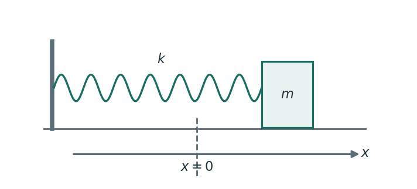

简谐振动、弹簧振子和基本量 SHM, spring oscillators and basic quantities
总复习 Review p. 3
详细课件 Detailed slides 9-1 · 9–28
以平衡位置为 x=0。线性回复力 F=−kx 给出 x″+ω²x=0，其中 ω=√(k/m)。取 x=A cos(ωt+φ)，A≥0，T=2π/ω，ν=1/T。相位 ωt+φ 同时约束位移和速度，φ 只描述 t=0。理想单摆在小角度下有 ω≈√(g/ℓ)，复摆为 √(mgd/J)，这里 d 是支点到质心的距离。
Set x=0 at equilibrium. A linear restoring force F=−kx gives x″+ω²x=0 with ω=√(k/m). Write x=A cos(ωt+φ), A≥0, T=2π/ω and ν=1/T. The phase ωt+φ fixes displacement and velocity, and φ describes the state at t=0. The small-angle frequencies of a simple and physical pendulum are √(g/ℓ) and √(mgd/J), with d measured from pivot to centre of mass.
把弹簧上的小球拉开再松手，小球在平衡位置两侧来回运动。平衡位置取 ，向右为正，最远能到 。简谐振动的关键不是“所有来回运动都长得像正弦”，而是回复力与位移成正比、方向相反：
Pull a mass attached to a spring and release it: it moves back and forth about equilibrium. Choose at equilibrium and the positive direction to the right; its extreme positions are . The defining condition for simple harmonic motion (SHM) is a restoring force proportional to displacement and opposite in direction:
弹簧劲度系数 越大，拉回的作用越强，振动越快；质量 越大，运动状态越难改变，振动越慢。理想弹簧振子的周期是
A larger spring constant produces a stronger restoring force and faster oscillation. A larger mass is harder to accelerate and oscillates more slowly. The period of an ideal mass–spring oscillator is
这个式子适用于理想线性弹簧、小球质量集中、阻力可忽略的模型。它不说明任何振动系统都具有相同周期公式。
This equation applies to an ideal linear spring, a concentrated oscillating mass and negligible resistance. Other oscillating systems do not necessarily have this period formula.
位置随时间变化的常用写法是
A common expression for position as a function of time is
逐个读懂： 决定“摆多远”， 决定“摆多快”， 决定“开始时摆到哪里、朝哪边走”。 是完成一次完整往返需要的时间， 是每秒往返次数， 是相位每秒增加多少弧度。
Read each symbol physically: determines how far the mass moves; determines how fast the oscillation proceeds; determines its initial position and direction of motion. The period is the time for one complete cycle. Frequency counts cycles per second, while measures the phase increase in radians per second.
相位 是运动进度。 相位从 增到 ，小球完成一周：
Phase describes the stage of the oscillation. As it increases from to , the mass completes one cycle:
| 相位 | 位移 | 运动状态 |
|---|---|---|
| 右端点，速度为零，随后向左 | ||
| 经过平衡位置，向负方向最快 | ||
| 左端点，速度为零，随后向右 | ||
| 经过平衡位置，向正方向最快 | ||
| 与相位 的状态相同 |
| Phase | Displacement | Motion |
|---|---|---|
| Right extreme; zero velocity; then moves left | ||
| Passes equilibrium at maximum speed in the negative direction | ||
| Left extreme; zero velocity; then moves right | ||
| Passes equilibrium at maximum speed in the positive direction | ||
| Same state as at phase |
相位相差 的整数倍，代表相同运动状态；相差 ，代表反相。
Phases differing by an integer multiple of describe the same state of motion. A difference of means opposite phase (antiphase).
弹簧振子的周期和初始加速度Spring oscillator period and initial acceleration
质量 0.50 kg 的物体接在劲度系数 8.0 N/m 的水平弹簧上，从平衡位置右侧 0.10 m 处静止释放。忽略阻力。求角频率、周期、振幅、余弦式的初相位和初始加速度。
A 0.50 kg mass on a horizontal spring of constant 8.0 N/m is released from rest 0.10 m to the right of equilibrium. Neglect resistance. Find its angular frequency, period, amplitude, cosine phase constant, and initial acceleration.

解答Solution
由回复力 F=−kx 和牛顿第二定律得 ω=√(k/m)=√(8.0/0.50)=4.0 rad/s，周期 T=2π/ω=π/2 s。
From F=−kx and Newton’s second law, ω=√(k/m)=√(8.0/0.50)=4.0 rad/s. The period is T=2π/ω=π/2 s.
t=0 时 x₀=+0.10 m、v₀=0，位于正端点。取 A=0.10 m、φ=0，振动方程为 x=0.10 cos(4.0t) m。
At t=0, x₀=+0.10 m and v₀=0, so the mass is at the positive endpoint. Use A=0.10 m and φ=0, giving x=0.10 cos(4.0t) m.
初始加速度 a₀=−ω²x₀=−1.6 m/s²，负号表示指向平衡位置。
The initial acceleration is a₀=−ω²x₀=−1.6 m/s². Its negative sign means toward equilibrium.